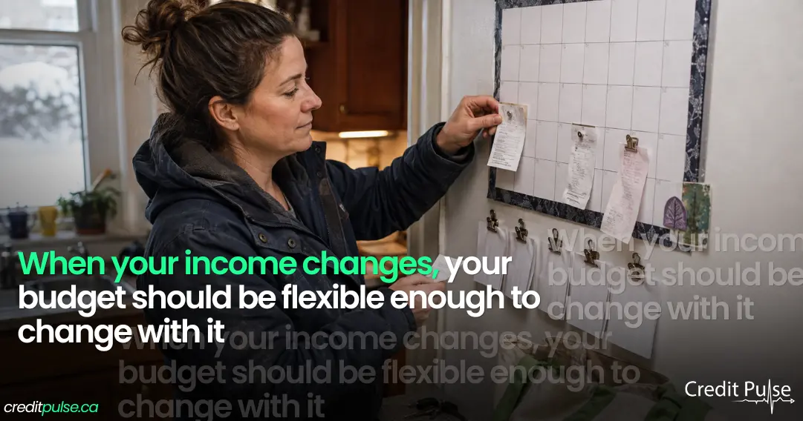

How to Budget on an Irregular Income: A Canadian Guide

If your income changes from month to month, most budgeting advice does not work for you, and it is not because you lack discipline. It is because almost every budget assumes a number you do not have: a predictable monthly paycheque.
The 50/30/20 rule, the monthly spreadsheet, the envelope method: they all start by asking what you earn each month. If the honest answer is “somewhere between $2,800 and $6,400, depending,” the method breaks at step one.
This guide covers a method built for variable income instead. It works for tradespeople, servers and bartenders, drivers and couriers, freelancers, commission earners, seasonal workers, and anyone whose deposits arrive in an unpredictable rhythm. There is a worked example at the end, and a section on the three Canadian tax and benefit traps that catch people whose income is not on a payroll.
Why Average-Based Budgeting Fails
The instinctive move is to average your income and budget against the average. This is the single most common mistake, and it fails in a specific, predictable way.
Say your income averages $3,800 a month. You build a budget around $3,800. In a good month you earn $5,200 and the budget works easily, so the extra tends to get spent, because there is no plan telling it where to go. Then a slow month arrives at $2,400, and you are $1,400 short of commitments you set based on the average.
The good months paid for good-month spending. They were supposed to be paying for the bad months. That is the whole failure, and it repeats every cycle.
The core principle: Budget against your floor, not your average. Your fixed commitments should be survivable in your worst months. Everything above the floor should be allocated deliberately, not left as spending money.
Step 1. Skim Tax Off the Top First
If you are self-employed, a contractor, or paid gross without deductions, do this before any budgeting. Nobody is withholding tax on your behalf, and tax owed is not your money. It is money you are holding.
Open a separate account you do not spend from. Every time you are paid, move a fixed percentage into it immediately, on the same day. For many people 25–30% is a reasonable starting point, but the right number depends on your income level, province, and expenses. Ask an accountant if you are unsure, because getting this wrong is expensive in a way that compounds.
Every figure in the rest of this guide refers to what is left after the tax skim. That is your working income.
Why the separate account matters more than the percentage: A tax reserve inside your chequing account is not a reserve. It is your balance, and you will spend it without ever deciding to. The physical separation is what makes the method work.
Step 2. Find Your Floor
Pull twelve months of income history: bank statements, invoicing software, payroll records, whatever you have. Write down what actually landed each month, after the tax skim.
Now ignore the average entirely. Instead, find your three lowest months and average those three. That number is your floor.
Twelve months is the minimum, because seasonality hides in shorter windows. A landscaper who looks at May through October will conclude they earn a comfortable living. February will disagree.
If you have less than a year of history, use what you have and mark the floor as provisional. Revisit it every time you add a month, and expect it to drop, because the first year of any variable-income work usually contains a worse month than you have seen yet.
Step 3. Build the Floor Budget
Your floor budget contains only what cannot flex: housing, utilities, groceries, transport to work, phone and internet, insurance, and minimum debt payments. Nothing else.
This list should feel uncomfortably short. Subscriptions, dining out, clothing beyond replacement, gifts, and anything you could postpone by a month all belong in the surplus tier, not here.
Then compare the two numbers. Either your essentials fit inside your floor, or they do not. Both outcomes are useful information.
- If they fit: you have a working system. Continue to step 4.
- If they do not fit: stop here and read the section near the end titled “When the Floor Does Not Cover the Essentials.” No budgeting method resolves a genuine shortfall, and continuing to steps 4 through 7 will only produce a plan that fails in month two.
Step 4. Pay Yourself a Fixed Amount
This is the mechanic that does most of the work, and it is the part people skip.
Use two accounts. Income lands in the first one, which we will call the holding account, and you never spend directly from it. On the same day each month, you transfer a fixed amount from holding into your spending account. That transfer is your paycheque, and it is the only money you live on.
Set the fixed amount at, or slightly above, your floor.
What this does is convert an irregular income into a regular one. Good months leave a surplus behind in the holding account. Slow months draw that surplus down. Your spending account sees the same number every month, which means you can finally budget the way every guide assumes you can, because the variability has been absorbed one layer up.
Two rules make or break it. Pick a transfer date and keep it, so the rhythm becomes real. And do not increase the transfer amount after a strong month. A strong month is evidence the system is working, not a raise. Revisit the amount once or twice a year, deliberately, from updated numbers.
Step 5. Allocate the Surplus by Percentage
Whatever accumulates in the holding account above your fixed transfer is surplus. Because surplus varies, allocate it by percentage rather than by fixed dollar amounts. A fixed-dollar plan breaks the moment a month comes in smaller than expected.
A starting split, to adjust to your circumstances:
| Allocation | Share | What it is for |
|---|---|---|
| Buffer | 40% | Until the buffer holds one month of floor budget. After that, drop to 20% and redirect the difference, continuing until you hold three months. |
| Irregular annual costs | 25% | Insurance premiums, tax preparation, vehicle maintenance and tires, professional dues, holidays and gifts. These are predictable in timing and unpredictable in month, which is exactly what sinks variable-income budgets. |
| Debt or savings goals | 20% | Above-minimum debt payments, or a specific savings target. |
| Discretionary | 15% | Yours to spend, guilt-free. |
That last row is not padding. A budget with no reward in it gets abandoned, usually within three months, and an abandoned good plan is worth less than a sustainable imperfect one. Build the reward in on purpose.
Step 6. The Three Canadian Traps
These catch people whose income is not on a payroll, and all three are more expensive to discover late than to plan for early.
Tax Instalments
If your net tax owing exceeds $3,000 in the current year and in either of the two preceding years, the Canada Revenue Agency generally expects you to pay by quarterly instalments rather than in one annual payment. For residents of Quebec the threshold is $1,800.
Instalment due dates fall on the 15th of March, June, September and December.
If your tax skim from step 1 is running properly, instalments are an administrative task rather than a crisis. If it is not, the first instalment notice tends to arrive in the same month as a slow income period, and that is how a manageable tax bill becomes debt.
CPP: You Pay Both Halves
An employee and their employer each pay half of that employee’s Canada Pension Plan contributions. If you are self-employed, you pay both halves yourself. The effective rate on your self-employment earnings is therefore roughly double what an employed person sees on their pay stub.
It is a real and often unwelcome surprise in a first year of self-employment. Factor it into the tax skim percentage rather than treating it as separate.
EI: You Must Register Long Before You Need It
This is the trap with the longest fuse, and the one most worth acting on today.
Self-employed Canadians can opt in to EI special benefits: maternity, parental, sickness, compassionate care, and family caregiver benefits. But you must register first, and then, in the government’s words, “you have to wait 12 months from the date of your confirmed registration before applying for EI special benefits.” There is also a minimum level of net self-employed earnings in the calendar year before you claim; the amount is indexed, so check the current figure.
You cannot decide you need this coverage at the point you need it. If there is any chance you will want parental or extended sickness coverage within the next couple of years, the decision about whether to register is one to make now, not later. Note also that opting in is a lasting commitment for most registrants, so read the terms before you sign up, not only the benefits.
The one thing to do this week: If parental leave or a period of illness is plausible for you in the next two years, look up EI special benefits registration today. The 12-month clock only starts when you register, and nothing else in this guide is as time-sensitive.
Step 7. Map Your Year
Irregular income is often less random than it feels. Most variable income is seasonal, and seasonality is predictable once you look at it on a calendar rather than a spreadsheet.
Take a twelve-month grid. Mark your historically strong months, your historically weak months, and every large irregular expense: insurance renewals, tax instalments, vehicle maintenance, tuition, holidays.
What usually emerges is a small number of genuine pressure points where a weak income month coincides with a large expense. Those specific collisions are what your buffer exists for, and knowing their dates in advance changes them from emergencies into scheduled events. Most people find two or three.
A Worked Example
Daniel drives for delivery apps and picks up event catering shifts. Over twelve months his gross deposits ranged from $2,800 to $6,400 a month.
Step 1: The Tax Skim
Daniel moves 25% of every deposit into a separate tax account on the day it arrives. His working income now ranges from $2,100 to $4,800.
Step 2: The Floor
His three lowest post-skim months were $2,100, $2,350 and $2,400. The average is $2,283, so his floor is about $2,280. His twelve-month average was $3,150, nearly $900 higher, and budgeting against it would have failed in every slow month.
Step 3: The Floor Budget
| Essential | Monthly |
|---|---|
| Rent | $1,100 |
| Utilities | $140 |
| Groceries | $400 |
| Vehicle fuel and insurance | $265 |
| Phone and internet | $95 |
| Minimum debt payments | $180 |
| Total | $2,180 |
His essentials fit inside his floor with about $100 to spare. The system will work.
Step 4: The Paycheque
Daniel sets a fixed transfer of $2,280 from holding to spending on the 1st of each month. In a $4,800 month, $2,520 stays behind in holding. In a $2,100 month, he draws $180 from the accumulated surplus and his spending account still sees $2,280. His rent is never a question.
Step 5: A Strong Month
A $4,800 month leaves $2,520 in surplus. Allocated at the percentages above:
| Allocation | Amount |
|---|---|
| Buffer (40%) | $1,008 |
| Irregular annual costs (25%) | $630 |
| Debt paydown (20%) | $504 |
| Discretionary (15%) | $378 |
Three strong months take his buffer past one month of floor budget. From there he drops the buffer share to 20% and moves the difference to debt, which is now being paid down faster than it was before he had a system at all, despite him earning exactly the same amount.
When the Floor Does Not Cover the Essentials
Sometimes the floor budget does not balance. The essentials exceed what the worst months bring in, and no allocation method changes that arithmetic.
This is worth naming plainly: that is a shortfall, not a discipline problem, and budgeting is the wrong tool for it. Continuing to optimise a plan that cannot balance mostly produces guilt.
What actually helps:
- Non-profit credit counselling. Accredited non-profit agencies in Canada provide free or low-cost counselling and can negotiate with creditors on your behalf. Free advice from a non-profit is a different product from a paid debt-relief service, and it is worth understanding the distinction before you pay anyone.
- Provincial and federal supports. Housing, utility, and child benefit programmes vary by province and are frequently unclaimed by people who qualify.
- Creditors, early. Many lenders and utilities have hardship provisions. They are considerably more useful before a missed payment than after one.
- The income side. Sometimes the honest conclusion is that the gap cannot be closed by managing expenses, and the work belongs on income or on fixed costs: a cheaper housing arrangement, or a different mix of work. That is a harder answer, but it is sometimes the true one.
Be careful what you sign when money is short: Small-dollar credit is easy to obtain and expensive to leave. Before agreeing to anything, ask for the annual percentage rate and the total amount you will repay, in dollars. Not the payment amount, and not a monthly rate. If a provider will not put both numbers in front of you plainly, that is your answer.
Quick Reference
- Skim tax off every deposit, into a separate account, on the day it arrives.
- Average your three lowest months. That is your floor. Ignore the twelve-month average.
- Build a floor budget of essentials only. Confirm it balances.
- Pay yourself a fixed amount from a holding account on a fixed date.
- Allocate everything above the floor by percentage, buffer first.
- Plan for tax instalments, both halves of CPP, and EI’s 12-month registration clock.
- Map your year and find where weak months collide with large expenses.
- Revisit the floor twice a year, and after any real change in your work.
Ready to put your financial knowledge to work?
Choose a Credit Pulse membership package and start earning up to $1,500 in cashback while building real financial skills.